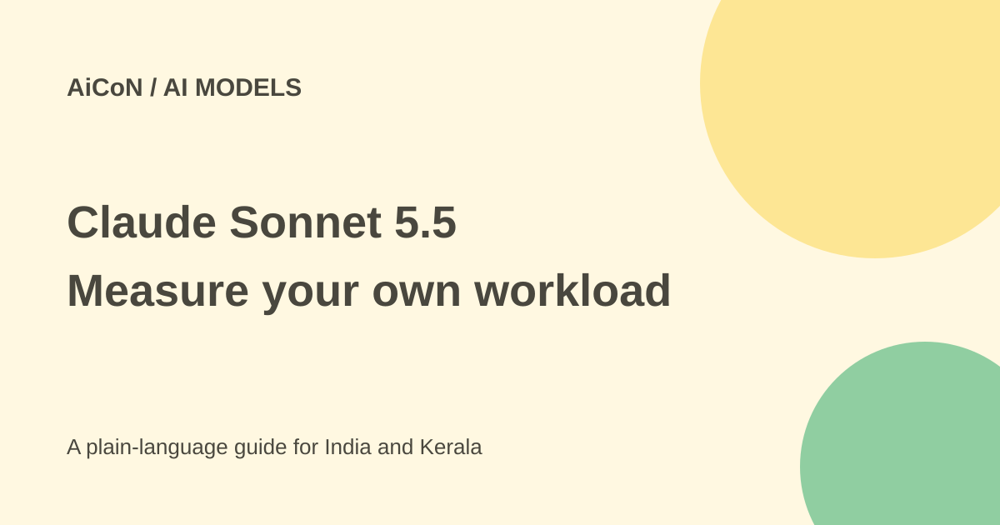

Claude Sonnet 5.5: API price, speed claims and safe testing
Claude Sonnet 5.5 is Anthropic's faster middle-tier model. Its API rate is not the price of a Claude app subscription, and lower task costs are not guaranteed for every workload.

What is Sonnet 5.5?
Anthropic announced Claude Sonnet 5.5 on 28 September 2026. It positions it for well-scoped everyday tasks, code fixes, documents, slides and spreadsheets. Its launch says Opus 5.5 remains stronger for complex, open-ended work requiring sustained judgement.
The current model documentation gives the developer model ID claude-sonnet-5-5, a one-million-token context window and a standard maximum output of 128,000 tokens. Context is the amount of material a model can work with at once. A maximum size does not guarantee good results when a task is unclear or overloaded with irrelevant material.
API pricing and INR comparison
The official base API rate is USD 2 per million input tokens and USD 10 per million output tokens. At the approximate ₹96.43-per-dollar reference used in this archive, that is about ₹193 and ₹964 respectively, before taxes and conversion differences. Input is what you send; output is what the model generates.
The model documentation also lists cache-read pricing of USD 0.20 per million tokens, about ₹19. Five-minute cache writes are USD 2.50, about ₹241, and one-hour cache writes USD 4, about ₹386. Caching has its own rules; do not apply the lower read rate to every request.
The general API pricing page says new users receive a small amount of test credits. That is not a permanent unlimited free API. Claude app access, subscription plans and third-party cloud billing are separate from these base developer rates. Check the actual product and account before paying.
Why a task can cost less at the same rate
The launch says Sonnet 5.5 keeps Sonnet 5's base rates but often uses fewer tokens. Anthropic reports up to 30% lower task cost and more than 30% faster output generation in its testing. Those results describe vendor tests, not an across-the-board discount on every bill.
Effort settings, prompt size, retries, tool calls and output length can change the cost. Compare complete tasks, including the review and correction time, rather than measuring only how fast text appears.
How to interpret its benchmarks
Anthropic reports 70.6% on Terminal-Bench 4.0 versus Sonnet 5's 10.3% in its evaluation. That is an agentic coding benchmark, not a probability that every bug fix will succeed. The company itself says benchmarks capture only one part of capability.
A model performing well in one coding setup may still make wrong edits, miss tests or misunderstand a project's requirements. Check the evaluation configuration before comparing it with a result from another harness or effort level.
How to test it safely
- Use the official model documentation and exact model ID.
- Choose a small, representative task with a known success test.
- Set a budget and limit output and tool permissions.
- Measure total tokens, latency and review time.
- Compare the result with your current model on the same task.
- Check code with tests and inspect important documents before sharing.
- Only expand access after the result and permissions fit your workflow.
Migration and privacy cautions
The release says users running Sonnet with thinking off need the new between_tools setting when migrating. Check the current migration guide and SDK behaviour instead of changing a production model name blindly.
Anthropic says zero-data-retention arrangements are available. Availability is not proof that every account or product has that setting enabled. Read the terms for the exact API, app or cloud service you use before uploading confidential work.
What changed since the original AiCoN post?
This guide keeps the verified dollar rates, updates the labelled INR comparison and explains caching, app-versus-API pricing and configuration limits. It retains the caveat that the speed and benchmark figures are Anthropic's own reports.
Frequently asked questions
Is USD 2 a monthly subscription price?
No. It is the base rate per million input tokens.
Does a one-million-token context guarantee accuracy?
No. Inputs and verification still matter.
Is a 30% cost saving guaranteed?
No. Measure your actual workload.
Sources: Official Sonnet 5.5 announcement · Model documentation · API pricing and test credits. Checked 7 October 2026.